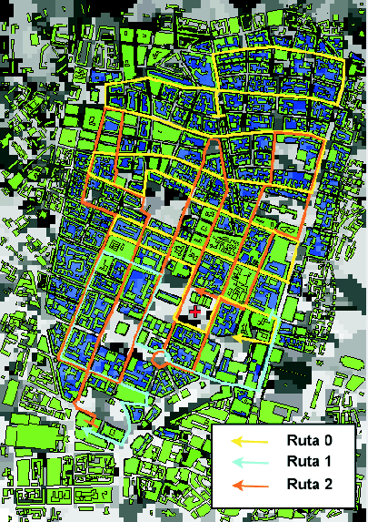
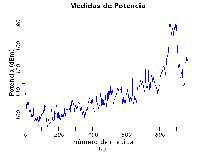
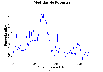
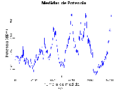

Siguiente: Breve descripción del entorno
Subir: Validación
Anterior: Validación
Índice General
El grupo de trabajo COST 231, durante la revisión de los modelos
desarrollados, llevó a cabo un conjunto de medidas de atenuación en
parte del centro de Munich, Alemania. Dichas medidas fueron usadas
en el reporte final para medir la exactitud de algunos de los
modelos desarrollados y otros del tipo ray-tracing a manera
de contraste. Para que la comunidad científica tenga la oportunidad
de comparar sus propios modelos contra medidas reales sin tener la
necesidad de realizar una costosa (tanto en tiempo como en dinero)
campaña de medidas, las hizo disponibles en una página web, en
conjunto con los datos topográficos correspondientes a la zona
[52].
Los datos se encuentran en formato ASCII y están separados en tres
secciones. La primera contiene la información de la altura y
disposición de cada edificio, así como la altura del terreno
subyacente al mismo. La segunda contiene las coordenadas de los
puntos donde se realizaron las medidas de atenuación, cada uno con
un identificador, y la última contiene la medida de atenuación en
cada coordenada. Es decir, no se cuenta con la información de cota
del terreno en toda la zona ni de disposición de las manzanas en
forma directa.
Para hallar la cota del terreno en todo punto, es necesario asignar
un valor de altura en aquellos puntos donde no haya edificaciones.
La convención en GeoTools es que el valor asignado en la grilla
corresponde con el valor en el centro del rectángulo, por lo que se
decidió asignar el valor de altura correspondiente al edificio más
cercano a dicho punto. Aunque se podrían haber realizado algoritmos
más sofisticados (como interpolar valores), la distancia entre
cualquier punto y algún edificio es siempre lo suficientemente
pequeña para que la diferencia entre ambos sea despreciable. En la
construcción del trazado de las manzanas se utilizó un método simple
pero efectivo; una vez visualizados los edificios era a simple vista
evidente la disposición de las manzanas, por lo que simplemente se
construyó a mano. Algoritmos más complicados, pero automáticos,
hubiesen podido utilizarse, pero el tiempo que consumiría tanto
implementarlos, utilizarlos como validarlos sería mucho mayor que el
que llevó este método ``artesanal''.
Las medidas se tomaron en tres recorridos distintos, identificados
como route00 (970 puntos), route01 (355 puntos) y
route02 (1031 puntos). El resultado de la construcción de los
datos topográficos, así como los tres caminos pueden apreciarse en
la figura 12.1. Curvas con los valores de las medidas se
pueden apreciar en la figura 12.2, donde se muestra la
atenuación en función de cada coordenada, siguiendo el sentido del
recorrido.
Figura 12.1:
El entorno donde se realizaron las medidas y los tres
recorridos
|

|
Figura 12.2:
Las medidas de las distintas rutas. (a)route00 (b)route01 (c)route02
|



|
Existen además comparaciones entre los modelos analizados en el
informe de COST231 [16] y estas medidas. El mismo
contiene una tabla con la varianza y media del error en la
predicción de los distintos modelos, así como gráficas comparativas
entre las distintas predicciones y las medidas reales. En particular
están revisados el modelo de Walfisch-Ikegami (seccion 5.3) y
el modelo Uni-Valencia
[53][54][55] basado en el
trabajo de Saunders y Bonar [47] que utiliza el
método de Vogler para estimar la difracción por múltiples cuchillos.
Siguiente: Breve descripción del entorno
Subir: Validación
Anterior: Validación
Índice General
SAPO